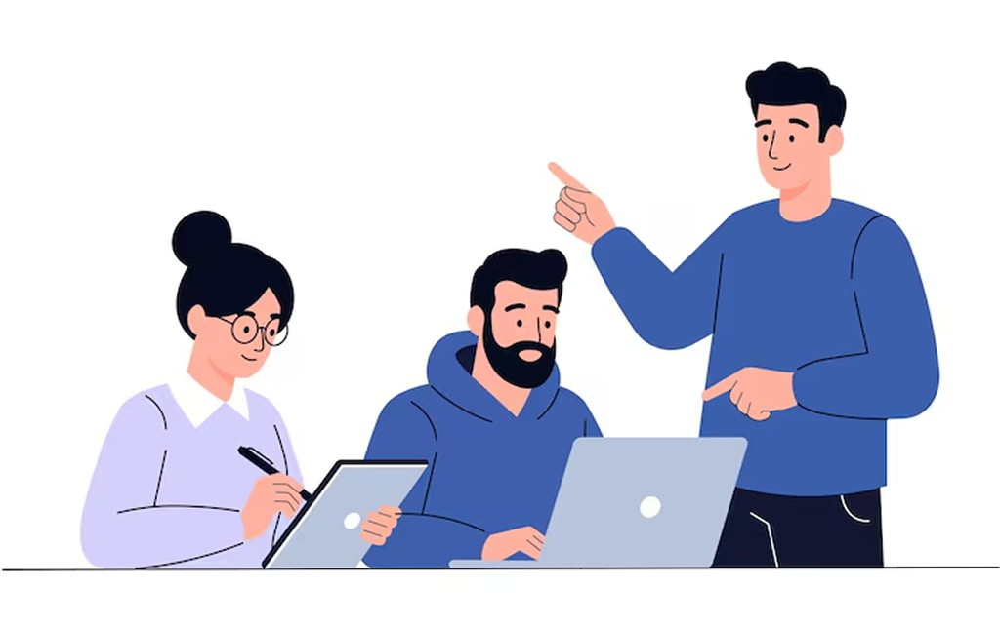
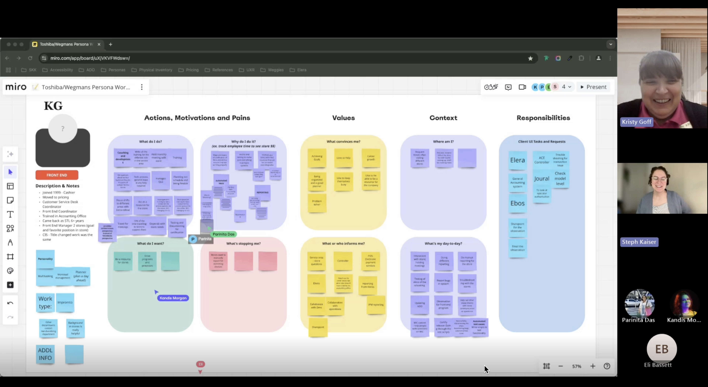
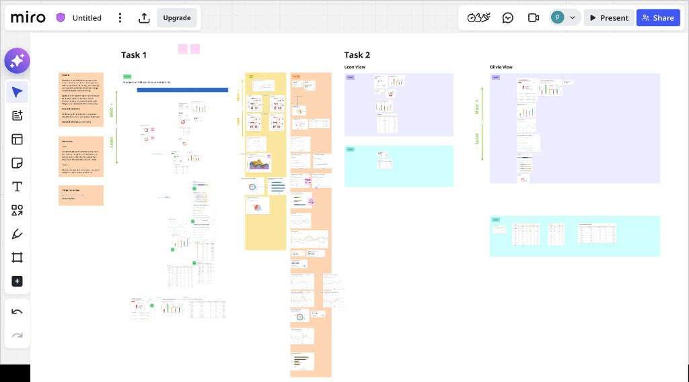
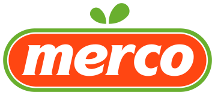

Enterprise · Data Visualization · Toshiba ELERA
Security Suite
Toshiba ELERA® introduced Security Suite, a software solution that uses data from POSPoint of sale hardware to address retail shrinkLoss of inventory due to theft or error and improve self-checkout experiences through AI insights.

Impact
Measurable outcomes after launch
- 243 store locations adopted Security Suite across global retail chains
- 50–70% increase in self-checkout transactions at participating stores
- Featured in retail security media coverage after launch
243
Stores adopted
Olímpica S.A, Weis Markets & Grupo El Rosado50–70%
Self-checkout growth
Increase in self-checkout transactionsMedia
Industry recognition
Featured in articles for retail securityProblem
The problem Security Suite solves
Mission
Empower retailers to minimize retail shrink.
Business need
A desktop app to monitor self-checkout activity, identify shrink, and help prevent future loss.
Insufficient data made it difficult to detect or monitor store losses in self-checkout without affecting transaction speed. That gap is the core problem Security Suite was built to solve.
Discovery
Understanding hardware and data flow
It was important to start by understanding self-checkout kiosk hardware and how its sensor data can be used to design a Security Suite dashboard to monitor events over time and enable action to prevent store losses.
Data flow

Stakeholders
Understanding cross-functional needs
I worked with cross-functional stakeholders and users to map critical loss prevention tasks, identify bottlenecks in event triage, and define which data charts mattered most for fast, high-confidence decisions.
20
User interviews conducted in-person and via Zoom
4
Stakeholder sessions with product and engineering
49
Data charts evaluated before prioritizing the v1 dashboard

20 users + 4 stakeholder interview

Collaborated with stakeholders for Road Map

Collaborated with team for previous research conducted on the project
Current problem
Gaps in the existing experience
- Not Enough Data: Only high-level loss data is available; no drill-down for action.
- Hardware Limitations: Produce switch loss isn’t captured due to hardware limits.

Current Security Suite app view used by Loss Prevention Manager
What stakeholders told us
"We are facing trouble with produce switching, it is not captured in the current app."- LP Manager
"Not enough data is available to track produce switching loss."- PO
"The SS don't help me take action to prevent losses."- LP Manager
Define
How might we
Build a data visualisation dashboard that leverages detailed hardware data to monitor and detect loss in self-checkout without affecting transaction speed?
Persona
Loss prevention manager
After interviews with store leaders and loss prevention teams, I synthesized recurring goals, pains, and workflows in Miro to define who we were designing for.


Prioritization
What we shipped in v1
I joined with 49 charts and tables already in circulation. I facilitated a card-sorting workshop with four stakeholders to align competing priorities and define what shipped in the first release.

Research finding


Out of 49 charts+tables only 15 charts+tables made it to the final dashboard.
Prototype
Interactive prototype
Explore the Security Suite loss-prevention prototype in Figma (desktop width).
Results
Outcome after launch
243 New Locations
Companies across the globe adopted Security Suite workflows.


50%-70%
Increase in self-checkout transactions reported by stores using Security Suite.
Media Coverage


Hover to view all, drag to browse.
Reflection
Learning outcome
- Early feedback made the design clearer and more impactful.
- Collaborative problem-solving (Feedback from Engineers)
Let's Create Something
Together
Get In Touch!